01 — The ideaTwo distances that should agree
In General Relativity, the only thing that changes a gravitational wave's amplitude on its journey is the expansion of the Universe, exactly as for light. So the luminosity distance we measure from a gravitational wave should be identical to the luminosity distance we would measure from light at the same redshift. In modified gravity, an extra friction term in the wave's propagation, often linked to a time-varying effective Planck mass, breaks that equality. We capture any such effect in a single function of redshift:
In General Relativity, \mathcal{F}(z) = 1 at every redshift. Earlier tests assumed a specific form for the deviation, usually a two-parameter power law. That form describes some theories well but misses others, for example models where the effect oscillates or behaves differently at low and high redshift. Instead, we reconstruct \mathcal{F}(z) non-parametrically, in independent redshift bins, so that any departure from General Relativity, of any shape, can show up in the data.
02 — The methodThree cosmic rulers
The difficulty is the electromagnetic distance: computing it from a cosmological model would make the test depend on that model. We instead build it directly from data, using three length scales measured by completely different observations:
- The gravitational-wave distance D_L^{\rm GW}, from the amplitude of the signal.
- The BAO angle \theta_{\rm BAO}(z), the angular size of the baryon acoustic ruler in the clustering of galaxies at the source's redshift.
- The sound horizon r_s, the physical length of that ruler, fixed by the cosmic microwave background.
Together with the source's redshift, they give the deviation directly:
If General Relativity and our picture of cosmology are right, this combination equals one at all redshifts. We infer it with a hierarchical Bayesian framework, either with the Hubble constant fixed or measured jointly with \mathcal{F}(z).
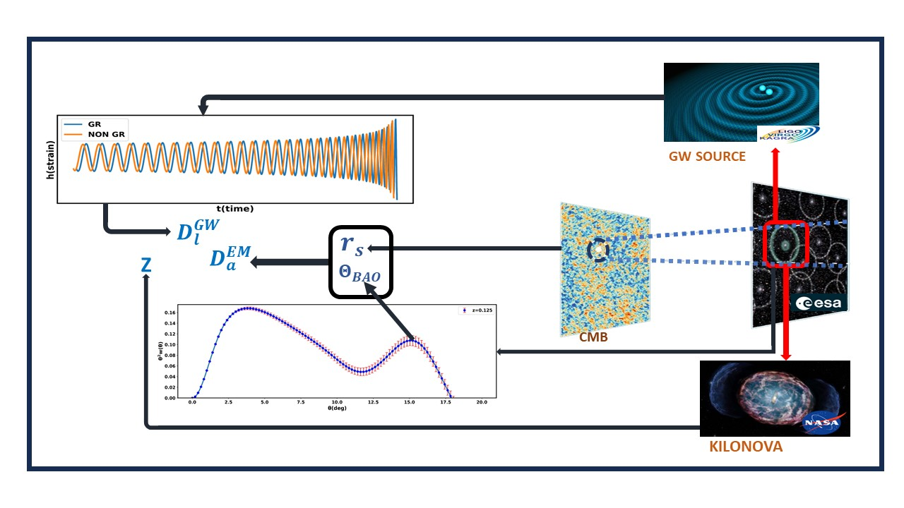
03 — The three studiesFrom today's detectors to LISA
Bright sirens on the ground
Neutron star mergers with an electromagnetic counterpart, from LIGO–Virgo–KAGRA to Cosmic Explorer and the Einstein Telescope.
Study 2 · JCAP 2024Bright sirens in space
Massive black hole mergers seen by LISA, testing gravity out to redshift 6.
Study 3 · MNRAS 2024Dark sirens with galaxies
Binary black holes without an electromagnetic counterpart, placed in redshift by cross-correlation with DESI and LSST galaxies.
Percent-level tests with neutron star mergers
The first study used bright sirens: binary neutron star (BNS) and neutron star–black hole (NSBH) mergers whose kilonova or gamma-ray burst pins down the redshift. We simulated realistic populations, estimated their distances with full Bayesian parameter estimation, and reconstructed \mathcal{F}(z) for the current LIGO–Virgo–KAGRA network and for Cosmic Explorer with the Einstein Telescope, varying how many events have a detected counterpart.
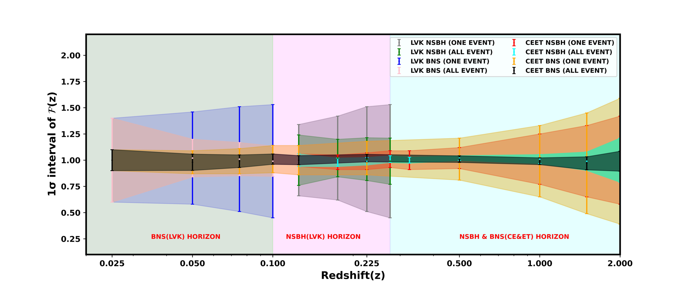
Today's detectors
Five years of LIGO–Virgo–KAGRA can already test General Relativity to about 8% with BNS mergers at redshift 0.075 and about 10% with NSBH mergers at redshift 0.225.
The next generation
Just one year of Cosmic Explorer and the Einstein Telescope reaches about 1.6% (BNS) and 2% (NSBH) at redshift 0.5, with similar precision up to redshift 1.
More events help, up to a point
The uncertainty falls roughly as one over the square root of the number of sirens, until the precision of the BAO measurement becomes the limit.
Measuring H0 at the same time
Fitting the Hubble constant jointly with \mathcal{F}(z) is possible, at the cost of errors about 2–2.2 times larger, since the two are partly degenerate.
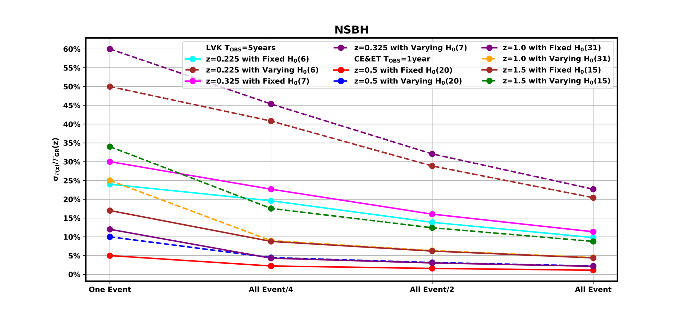
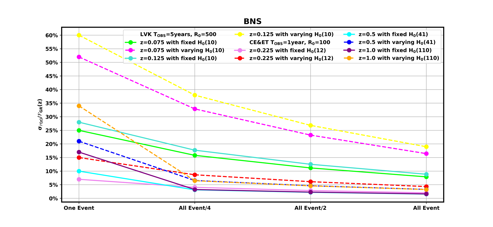
Testing gravity out to redshift 6 from space
The space-based detector LISA, due to launch in the mid-2030s, will hear the mergers of massive black hole binaries, of around a million solar masses, from across almost the whole observable Universe. These mergers are expected to happen in gas-rich galactic centres, where they can light up and reveal their host galaxy, which makes them ideal bright sirens.
We simulated LISA's sources for three scenarios of how the first massive black holes formed (light seeds, heavy seeds, and heavy seeds with merger delays), and applied the same three-ruler test. Because LISA's signals are so loud, a single event is already a powerful test: \mathcal{F}(z) can be measured to about 2.4% at redshift 1 and about 7.2% at redshift 6.
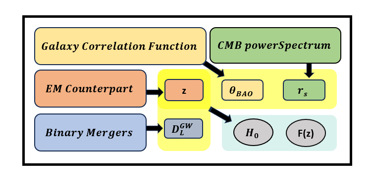
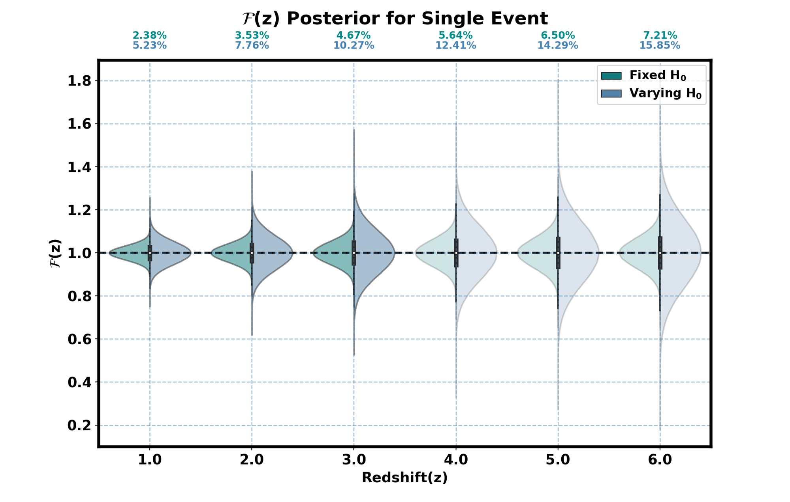
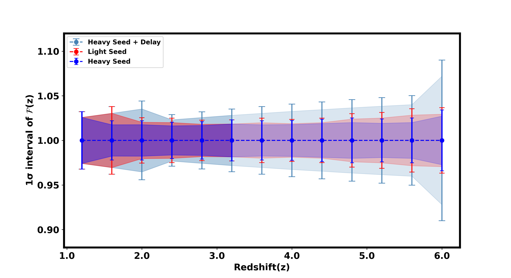
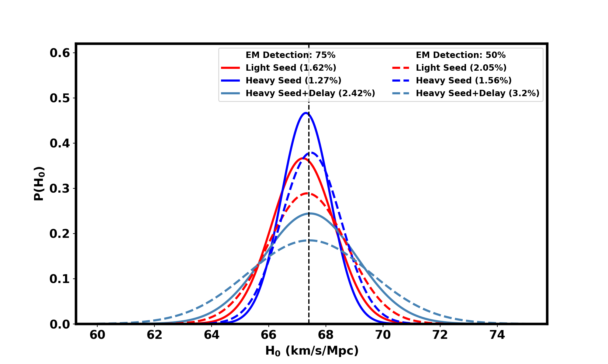
No counterpart needed: binary black holes and galaxy surveys
Most gravitational-wave detections are binary black holes, which are not expected to have an electromagnetic counterpart. The third study extended the test to these dark sirens. Their redshifts are recovered statistically by cross-correlating their sky positions with galaxies, since both trace the same large-scale structure. We compared the spectroscopic DESI survey, which gives precise redshifts, with the photometric Rubin Observatory LSST survey, which reaches deeper.
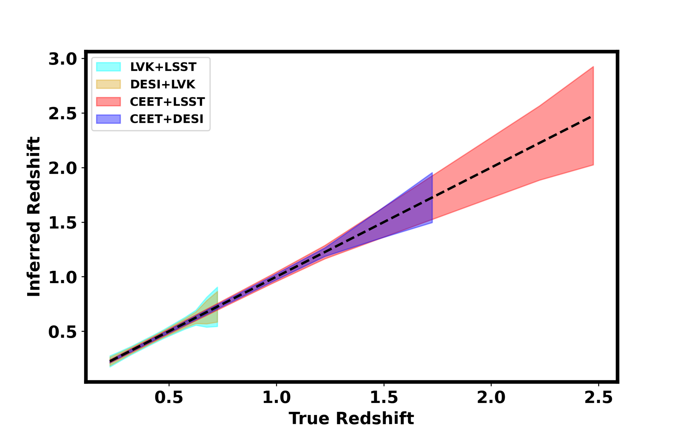
With the Hubble constant fixed, the test reaches about 4% for Cosmic Explorer + Einstein Telescope with DESI between redshift 0.3 and 1.2 (about 5% with LSST), and about 9% for LIGO–Virgo–KAGRA with DESI between redshift 0.3 and 0.6 (about 12% with LSST).
The main source of uncertainty is the redshift from cross-correlation, so surveys with wider sky coverage, or several surveys combined, directly improve the test. DESI does better at low redshift, while LSST takes over at high redshift, where individual galaxy spectra are hard to obtain.
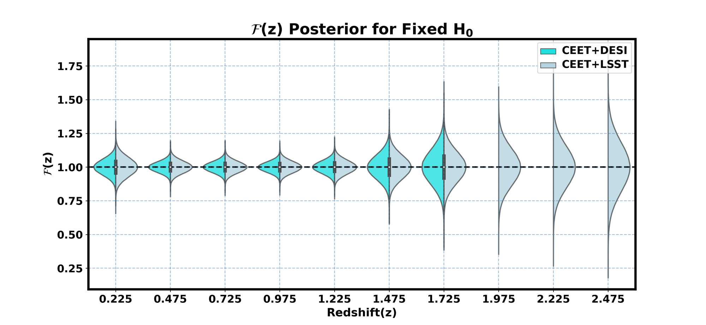
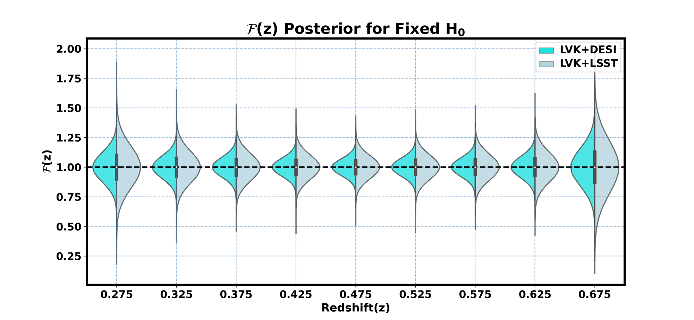
The best-measured bin, at redshift 0.425, reaches about 3.6% for Cosmic Explorer + Einstein Telescope and 7.4% for LIGO–Virgo–KAGRA with DESI. Measuring the Hubble constant jointly roughly doubles the uncertainty on \mathcal{F}(z), because the two are partly degenerate, but in return the Hubble constant itself is measured to about 1.1% with next-generation detectors and DESI, and about 7% with the current network, while allowing for deviations from General Relativity.
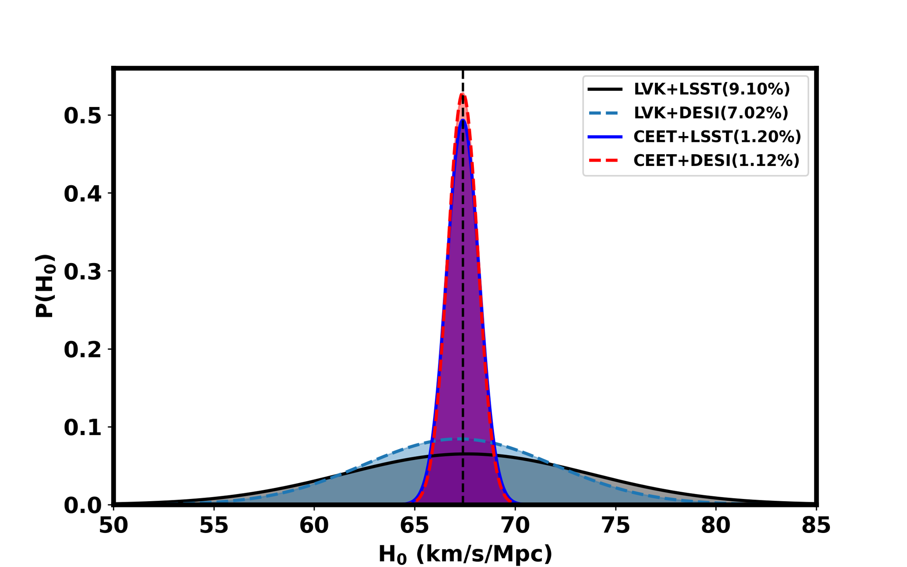
04 — Why it mattersA theory-independent test of gravity
Many explanations of dark energy modify gravity on cosmological scales, and the propagation of gravitational waves is one of the cleanest places to look for them. Because \mathcal{F}(z) is reconstructed bin by bin from independent observations, the test is sensitive to any theory that alters gravitational-wave propagation, from scalar–tensor and Horndeski theories to models with extra dimensions, without having to guess the form of the deviation in advance.
The three studies show that the same idea works across the whole gravitational-wave spectrum and every kind of source: bright and dark sirens, ground and space detectors, from the nearby Universe out to redshift 6. With LIGO-India, deeper BAO measurements from DESI, Euclid and Rubin, and future detectors, it can turn the growing gravitational-wave catalogue into a percent-level map of how gravity behaves across cosmic time.